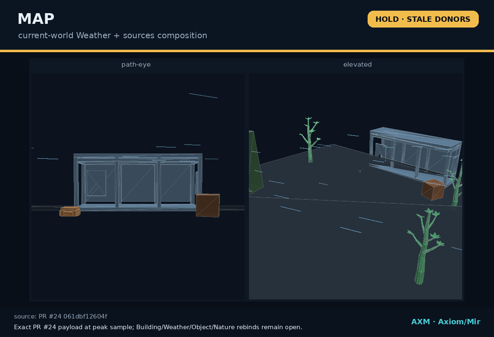

Vehicle Design
Justified when Wreckline's vehicle semantics cannot truthfully remain inside Object or Unit.
CONTROL ROOM / CURRENT TRUTH
Create-Me coordinates the 3D specialists without absorbing their authority. Every preview below stays bound to its exact source and unresolved gate.
Source constellation
LIVE RECORD · READ ONLYCONTROL HEAD ec84bf9a309a
Truth boundary: this shell reports, compares, and routes. It does not merge, promote, regenerate, or silently rewrite specialist work.
FIRST INTEGRATED VIEW

ASSEMBLY LINE
The world slice is real, but it still consumes older specialist versions. The next job is provenance repair, not more scenery.
DOMAIN OWNERS
No specialist matches this view.
CROSS-DOMAIN CREW
Roles judge and connect work. Domains retain source ownership.
CATEGORY GROWTH RULE
Justified when Wreckline's vehicle semantics cannot truthfully remain inside Object or Unit.
Justified when roads, cliffs, ground layers, or erosion exceed Map and Nature ownership.
Lighting stays a shared seat first. Creature stays inside Animal until repeated work proves a split.